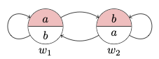

14 Quantified Modal Logic
Quantified modal logic supplements the vocabulary of quantificational logic with a modal operator \(\Box\). The simplest quantified modal logic extends the axioms of quantificational logic with substitution instances of \(\textsf{K}\) and the rule of necessitation. We will explain how to construct possible worlds models for the language of quantificational modal logic.
14.1 Motivation
By way of motivation, we briefly look at the expressive resources we gain when we combine quantification and modality.
There are at least two interpretations of the English sentence:
- Someone rich could have been poor.
On the one hand, there is a de dicto interpretation on which we qualify the proposition that somone rich is poor:
1a. Possibly, someone rich is poor.
On the other hand, there is a de re interpretation, which qualifies the way in which some individual person is rich:
1b. Someone who is rich is possibly poor.
Quantificational modal logic allows one to capture that distinction:
\[ \begin{array}{lll} 1a & \Diamond \exists x (Rx \wedge Px) & \text{(de dicto)} \\ 1b & \exists x (Cx \wedge \Diamond Px) & \text{(de re)} \\ \end{array} \]
This distinctions help dispel what might otherwise be thought to be puzzles on the interaction between predication and modality. Furthemore, the framework allows one to make a common distinction between essential and accidental attributes.
One common distinction between a statue made of clay and the portion of clay of which it is made is that while they exemplify a certain shape, the shape is an essential attribute of the statue and an accidental attribute of the clay of which it is made. One way to articulate the distinction makes use of de re modality:
\(F\) is an essential attribute of \(x\) if, and only if, \(\Box Fx\).
\(F\) is an accidental attribute of \(x\) if, and only if, \(Fx \wedge \neg \Box Fx\).
This is, however, just a provisional characterization of the distinction, since it is not well-suited to accommodate the contingent existence of the statue and the clay.
W. V. O. Quine had a more serious objection to the very intelligibility of quantified modal logic. His objection is premised on a certain interpretation of the modality involved in the language of quantified modal logic. Like Carnap and others before him, he took the modality to be linguistic at heart. To claim that necessarily, all bachelors are unmarried is to assert, on their view, that the sentence ‘all bachelors are unmarried’ is analytic or true in virtue of the meaning of the terms involved. What else, they may add, could the necessity involved be?
That interpretation is ill-suited to make sense of quantified modal logic. For compare the truth conditions of the two sentences below:
\(\Box \exists x Fx\)
For Quine, this sentence is true if, and only if, the sentence \(\exists x Fx\) is analytic.
\(\exists x \Box Fx\)
This sentence is true if, and only if, the open formula \(\Box Fx\) is true relative to an assignment of an object to the individual variable \(x\). If \(\Box Fx\) is true relative to an assignment if, and only if, \(Fx\) is analytic relative to that assignment. But what could that mean? Closed sentences may be true or not in virtue of the meaning of the terms involved, but it is difficult to make sense of the truth of an open formula in virtue of the meaning of the terms involved, much less the truth of an open formula relative to an assignment.
14.2 Basic Language
Given an initial list of \(n\)-place predicates \(R^n\) and an infinite stock of variables \(v_1, \dots, v_n, \dots\), we define atomic formula as follows:
\[ \varphi ::= R^n v_1, \cdots, v_n \ | \ v_i = v_j \ \]
Given a set \(AT\) of atomic formulas, we define a formula as follows:
\[ \varphi ::= AT \ | \ \neg \varphi \ | \ (\varphi \to \psi) \ | \ \forall v_i \varphi \ | \ \Box \varphi \]
We now define familiar connectives in terms of \(\neg\), \(\to\), \(\forall\), and \(\Box\):
\[ \begin{array}{lll} \top & := & (p \to p)\\ \bot & := & \neg \top \\ (\varphi \vee \psi) & := & (\neg \varphi \to \psi)\\ (\varphi \wedge \psi) & := & \neg (\varphi \to \neg \psi)\\ (\varphi \leftrightarrow \psi) & := & (\varphi \to \psi) \wedge (\psi \to \varphi)\\ \exists v_i \varphi & := & \neg \forall v_i \neg \varphi \\ \Diamond \varphi & := & \neg \Box \neg \varphi\\ \end{array} \]
The simplest quantified modal logic combines the axioms of quantificational logic with identity with the axioms of the minimal normal modal logic K. That will motivate a simple possible worlds model theory for the language, one that has, however, been controversial. In order to be in a position to discuss the framework, we should review the axioms of quantificational logic with identity.
14.3 The Simplest Modal Quantificational Logic
The axioms for quantificational logic with identity include:
Substitution instances of axioms of propositional logic for the expanded language.
Substitution instances of the axiom of universal instantiation:
\[ \begin{array}{lll} \forall x \ \varphi \to \varphi[y/x] & & (\textsf{UI})\\ \end{array} \]
where \(\varphi[y/x]\) is the formula that results from \(\varphi\) from the uniform substitution of occurrences of the variable \(y\) for every free occurrence of the variable \(x\) in the formula relettering if necessary to make sure that the resulting occurrences of \(y\) remain free after the substitution.
- Substitution instances of Reflexivity and the Indiscernibility of Identicals for the expanded language:
\[ \begin{array}{lll} x = x & & (\textsf{Ref})\\ x = y \to (\varphi \to \varphi[y/x]) & & (\textsf{II})\\ \end{array} \]
Two rules of inference, Modus Ponens and Universal Generalization:
\[ \begin{array}{lll} \varphi, \varphi \to \psi / \psi & & (\textsf{MP})\\ \varphi \to \psi / \varphi \to \forall x \ \psi, & \text{$x$ is not free in $\psi$} & (\textsf{UG})\\ \\ \end{array} \]
We are in a position prove some derived rules of inference from them: \[ \begin{array}{lll} \varphi / \forall x \ \varphi & \text{provided $x$ is not free in $\varphi$}\\ \varphi \to \psi / \forall x \ \varphi \to \forall x \ \psi & & \\ \forall x (\varphi \to \psi) \to (\forall x \varphi \to \forall x \psi) & & \\ \end{array} \]
We now adopt all substitution instances of the axioms of quanficational logic with identity for the expanded language, which we supplement with the axioms and rules of inference for the minimal normal modal logic:
\[ \begin{array}{lll} \Box (\varphi \to \psi) \to (\Box \varphi \to \Box \psi) & & (\textsf{K}) \\ \varphi / \Box \varphi & & (\textsf{RN}) \\ \end{array} \]
We now derive three remarkable consequences of the axioms of quantified modal logic with identity.
The Converse Barcan Formula
One consequence of the axioms is the Converse Barcan Formula (\(\textsf{CBF}\)):
\[\tag{$\textsf{CBF}$} \Box \ \forall x \ \varphi \to \forall x \ \Box \ \varphi \] Here is a simple derivation schema:
\[ \begin{array}{lllll} 1 & & \forall x \ \varphi \to \varphi & & \text{UI} \\ 2 & & \Box \ \forall x \ \varphi \to \Box \ \varphi & & \text{RK} \ 1\\ 3 & & ( \Box \ \forall x \ \varphi \to \Box \ \varphi) \to (\Box \ \forall x \ \varphi \to \forall x \ \Box \ \varphi) & & \text{UG} \ 2 \\ 4 & & \Box \ \forall x \ \varphi \to \forall x \ \Box \ \varphi & & \text{MP} \ 2, 4\\ \end{array} \]
CBF seems problematic, since it automatically gives us the necessity of existence.
The Necessity of Existence
Existence is generally understood in terms of quantification and identity: to exist is to be identical with something. But given \(\textsf{CBF}\), we now are in a position to prove that everything necessarily exists.
\[ \begin{array}{lllll} 1 & & \forall x \ \exists y \ x = y & & \text{QL} \\ 2 & & \Box \ \forall x \ \exists y \ x = y & & \text{N} \ 1\\ 3 & & \Box \ \forall x \ \exists y \ x = y \to \forall x \ \Box \ \exists y \ x =y & & \text{CBF} \\ 4 & &\forall x \ \Box \ \exists y \ x =y & & \text{MP} \ 2 3\\ \end{array} \]
Here is another derivation of the theorem: \[ \begin{array}{lllll} 1 & & x= x & & \textsf{Ref} \\ 2 & & x = x \to \exists y \ x = y & & \textsf{EG} \\ 3 & & \Box \ x = x & & \textsf{RN} \ 1\\ 4 & & \Box \ x = x \to \Box \ \exists y \ x = y & & \textsf{RK} \ 2\\ 5 & & \Box \ \exists y \ x = y & & \textsf{MP} \ 3, 4\\ 6 & & \forall x \ \Box \ \exists y \ x = y & & \textsf{UG} \ 5\\ \end{array} \]
Since we can necessitate the conclusion, we find that the simplest quantified modal logic proves that it is necessary that everything necessarily exists. This appears to fly in the face of common sense: do we not exist contingently?
The Barcan Formula
The Barcan Formula (\(\textsf{BF}\)) is not a theorem of the simplest quantified modal logic, as we have described it, but its instances become derivable in the presence of axiom schema \(\textsf{B}\). \[\tag{$\textsf{BF}$} \forall x \ \Box \ \varphi \to \Box \ \forall x \ \varphi \] Given axiom \(\textsf{B}\), we have as a derived rule of inference: \[\tag{$\textsf{DR}$} \Diamond \ \varphi \to \psi/\varphi \to \Box \ \psi \] Here is a justification for the derived rule in KB:
\[ \begin{array}{lllll} 1 & & \Diamond \ \varphi \to \psi & & \\ 2 & & \Box \ \Diamond \ \varphi \to \Box \ \psi & & \textsf{RK} \ 1\\ 3 & & \varphi \to \Box \ \Diamond \ \varphi & & \textsf{B} \\ 4 & & \varphi \to \Box \ \psi & & \textsf{PL} \ 2, 3\\ \end{array} \] We use the derived rule of inference for a derivation of BF in the presence of axiom B: \[ \begin{array}{lllll} 1 & & \forall x \ \Box \varphi \to \Box \varphi & & \textsf{UI} \\ 2 & & \Diamond \ \forall x \ \Box \varphi \to \Diamond \ \Box \ \varphi & & \textsf{RK} \ 1\\ 3 & & \Diamond \ \Box \ \varphi \to \varphi & & \textsf{B}_\Diamond \\ 4 & & \Diamond \ \forall x \ \Box \varphi \to \varphi & & \textsf{PL} \ 2, 3\\ 5 & & (\Diamond \ \forall x \ \Box \varphi \to \varphi) \to (\Diamond \ \forall x \ \Box \varphi \to \forall x \ \varphi) & & \textsf{UG} \\ 6 & & \Diamond \ \forall x \ \Box \varphi \to \forall x \ \varphi & & \textsf{MP} \ 4, 5 \\ 7 & & \forall x \ \Box \varphi \to \Box \ \forall x \ \varphi & & \textsf{DR} \ 6 \\ \end{array} \]
The derivability of BF is philosophically problematic: a physicalist may well accept that everything is necessarily a physical object but nevertheless make room for the possibility that non-physical objects exist. More dramatically, consider the converse of \(\textsf{BF}\):
\[ \Diamond \ \exists x \ \varphi \to \exists x \ \Diamond \ \varphi. \]So, for example, if it is possible for there to be unicorns, then something is possibly a unicorn.
The Necessity of Identity
We are in a position to establish the necessity of identity.
\[ \tag{NI} x= y \to \Box \ x = y \]
Here is a derivation: \[ \begin{array}{lllll} 1 & & x = y \to (\Box \ x=x \to \Box \ x =y) & & \textsf{II} \\ 2 & & x = x & & \textsf{RI} \\ 3 & & \Box \ x=x & & \textsf{RN} \ 2 \\ 4 & & x=y \to \Box \ x =y & & \textsf{PL} \ 1, 3 \\ \end{array} \]
The Necessity of Distinctness
In the presence of axiom B, we can derive the necessity of distinctness: \[ x \neq y \to \Box \ x \neq y \tag{$\textsf{ND}$} \\ \] Here is a simple argument: \[ \begin{array}{lllll} 1 & & \Diamond \ x \neq y \to x \neq y & & \textsf{NI} \\ 2 & & \Box \ \Diamond \ x \neq y \to \Box \ x \neq y & & \textsf{RK} \ 1\\ 3 & & x \neq y \to \Box \ \Diamond x \neq y & & \textsf{B} \\ 4 & & x \neq y \to \Box \ x \neq y & & \textsf{PL} \ 2, 3\\ \end{array} \]
The role of axiom B appears to be crucial for the proof. Otherwise, we can provide a model of contingent distinctness by construing identity as indiscernibility and providing a model in which to discernible objects can become indiscernible at a world to which no other world in which the objects exemplify distinct properties is accessible.
14.4 Free Quantified Modal Logic
It is not uncommon to regard the provability of the Necessity of Existence in the simplest quantified modal logic as a powerful reason to weaken the axioms of the quanficational fragment of the system. This impression is sometimes reinforced by appeal to independent considerations.
Free Quantificational Logic
The axioms of quantificational logic have been independently questioned on the grounds that they deliver what some regard as objectionable consequences. There is, for example, the schema of Existential Generalization:
\[ \begin{array}{lll} \varphi[y/x] \to \exists x \ \varphi(x) & & (\textsf{EG})\\ \end{array} \]
The proof is simple:
\[ \begin{array}{lllll} 1 & & \forall x \ \neg \varphi(x) \to \neg \varphi(y) & & \textsf{UI} \\ 2 & & \neg \neg \varphi(y) \to \neg \forall x \neg \varphi(x) & & \textsf{PL}, 1 \\ 3 & & \varphi(y) \to \neg \forall x \neg \varphi(x) & & \textsf{PL} \ 2 \\ 4 & & \varphi(y) \to \exists x \varphi(x) & & \textsf{Def} \ \exists, 3 \\ \end{array} \]
There are at least two reasons philosophers have used to object to the schema:
In the presence of terms without denotation, the schema delivers unreasonable existential claims. If we include a term \(c\) for Pegasus, say, into the language, then we learn that \(\exists x \ x = c\), which is absurd.
Existential generalization allows one to move from a universal generalization to an existential one, which conflicts with the thought that the former could have been true even in the absence of true instances.
\[ \vdash \forall x \ \varphi(x) \to \exists x \ \varphi(x) \]
Kripke on Universal Instantiation
Saul Kripke weakens the axiom of Universal Instantiation as follows: \[ \forall y (\forall x \ \varphi(x) \to \varphi[y/x]) \tag{$\textsf{KFUI}$} \]where \(\varphi[y/x]\) is, as usual, the formula that results when we replace every free occurrence of the variable \(x\) in \(\varphi\) with an occurrence of the variable \(y\) making sure to reletter if necessary. Before we look at the proposal in some detail, we may consider Kripke’s own motivation for it. He has in mind the following derivation of an instance of the Converse Barcan Formula in the simplest quantified modal logic: \[ \begin{array}{lllll} 1 & & \forall x \ Fx \to Fy & \textsf{UI} \\ 2 & & \Box (\forall x \ Fx \to Fy) & \textsf{RN} \ 1 \\ 3 & & \Box (\forall x \ Fx \to Fy) \to (\Box \forall x \ Fx \to \Box \ Fy) & \textsf{K} \\ 4 & & \Box \forall x \ Fx \to \Box \ Fy & \textsf{PL} \ 2, 3 \\ 5 & & \Box \forall x \ Fx \to \forall x \ \Box \ Fx & \textsf{UG} \ 4 \\ \end{array} \] This is what he writes:
Actually, the flaw lies in the application of necessitation to [1]. In a formula like [1], we give the free variables the generality interpretation: when [1] is asserted as a theorem, it abbreviates an assertion of its ordinary universal closure: \[ \begin{array}{lllll} [1'] & \forall y (\forall x Fx \to Fy) \end{array} \] Now, if we applied necessitation to [1’], we would get \[ \begin{array}{lllll} [2'] & \Box \ \forall y \ (\forall x Fx \to Fy) \end{array} \] On the other hand, [2] itself is interpreted as asserting: \[ \begin{array}{lllll} [2''] & \forall y \ \Box \ (\forall x Fx \to Fy) \end{array} \] To infer [2’’] from [2’], we would need a law of the form \(\Box \ \forall y \ Cy \to \forall y \ \Box Cy\), which is just the converse Barcan formula we are trying to prove […]. We can avoid this sort of difficulty if, following Quine, we formulate quantification theory so that only closed formulae are asserted. Assertion of formulae containing free variables is at best a convenience; assertion of \(\varphi(x)\) with free \(x\) can always be replaced by assertion of \(\forall x \ \varphi(x)\).
So, Kripke’s suggestion is to block the application of necessitation to open formulas by adopting a formulation of quantificational logic without open formulas as axioms. Hence the proposal to weaken UI to KFUI, which is its universal closure. As it turns out, Kripke’s proposal requires the adoption of a further quantificational axiom::\[ \forall x \ \forall y \ Rxy \to \forall y \ \forall x \ Rxy \] Notice that we are still in a position to define existence in terms of quantification and identity. What we no longer have is a derivation of existential generalization. At most, we are in a position to derive: \[ \begin{array}{lllll} 1 & & \forall y \ (\forall x \ \neg \varphi(x) \to \neg \varphi(y)) & & \textsf{KFUI} \\ 2 & & \forall y (\neg \neg \varphi(y) \to \neg \forall x \neg \varphi(x)) & & \textsf{PL} \ 1\\ 3 & & \forall y (\varphi(y) \to \neg \forall x \neg \varphi(x)) & & \textsf{PL} \ 2\\ 4 & & \forall y (\varphi(y) \to \exists x \varphi(x)) & & \textsf{Def} \ \exists \ 3\\ \end{array} \] We similarly have: \[ \vdash \forall x \ (x = x \to \exists y \ x =y) \]
and
\[ \vdash \forall x \ x = x \to \forall x \ \exists y \ x =y \]but either theorem is harmless when it comes to being able to derive the necessity of existence.
14.5 Semantics
We have distinguished at least two axiomatizations of quantified modal logic. We now proceed to explain how to interpret the language in order to validate the relevant axioms.
Constant Domain Models
We use constant domain models to interpret the simplest quantified modal logic.
A constant domain model \(M\) is a structure \((W, R, D, I)\) where:
\(W\) is a non-empty set of worlds
\(R\) is a binary accessibility relation on \(W\)
\(D\) is non-empty domain of individuals
\(I\) is a function from worlds \(w\) into interpretations \(I_w\), which map each \(n\)-place predicate \(P^n\) into an \(n\)-place relation over \(D\).
A variable assignment \(\alpha\) for a model \(M\) is a function from individual variables into members of \(D\).
We now define what is for a formula \(\varphi\) to be true at a world \(w\) in a model \(M\) relative to an assignment \(\alpha\). In what follows, \(\alpha[x/d]\) is an assignment just like \(\alpha\) except perhaps for assigning \(d\) to the variable \(x\).
We use a recursive definition: \[ \begin{array}{lll} M, w, \alpha \Vdash P^n v_1 \dots v_n & & \text{iff} & & \langle \alpha(v_1), \dots, \alpha(v_n)\rangle \in I_w (P^n)\\ M, w, \alpha \Vdash v_1 = v_2 & & \text{iff} & & \alpha(v_1) = \alpha(v_2)\\ M, w, \alpha \Vdash \neg \varphi & & \text{iff} & & M, w, \alpha \nVdash \varphi \\ M, w, \alpha \Vdash (\varphi \to \psi) & & \text{iff} & & M, w, \alpha \nVdash \varphi \ \text{or} \ M, w, \alpha \Vdash \psi\\ M, w, \alpha \Vdash \forall x \ \varphi & & \text{iff} & & M, w, \alpha[x/d] \Vdash \varphi \ \text{for every} \ d\in D\\ M, w, \alpha \Vdash \Box \ \varphi & & \text{iff} & & M, u, \alpha \Vdash \varphi \ \text{for every} \ u \in W \ \text{such that} \ Rwu\\ \end{array} \]
We now define truth at a world and truth in a model as usual:
A formula \(\varphi\) is true at a world \(w\) in a model \(M\), in symbols \(M, w \Vdash \varphi\), if, and only if, for all assignments \(\alpha\) for \(M\), \(M, w, \alpha \Vdash \varphi\)
A formula \(\varphi\) is true in a model \(M\), in symbols, \(M \Vdash \varphi\), if, and only. if, for all \(w \in W\), \(M, w \Vdash \varphi\).
By way of example, consider the fact that \(\exists x \neg \Box Fx \to \Diamond \forall x \neg Fx\) is not true in every reflexive and euclidean constant domain model.
\(\not \models_{\text{refl and eucl}} \exists x \neg \Box Fx \to \Diamond \forall x \neg Fx\)
Consider a constant domain model \(M\) of the form \(( W, R, D, I)\), where:
\(W = \{w_1, w_2\}\)
\(R = \{(w_1, w_1), ( w_1, w_2), (w_2, w_1), (w_2, w_2)\}\)
\(D = \{a, b\}\)
\(I_{w_1}(F) = \{a\}\)
\(I_{w_2}(F) = \{b\}\)
For a diagram, consider:

Now:
\(M, w_1 \Vdash \exists x \neg \Box Fx\) because \(M, w_1, \alpha[b/x] \Vdash \neg \Box Fx\)
\(M, w_1 \nVdash \Diamond \forall x \neg Fx\) because \(M, w_1 \Vdash \forall x \neg Fx\) and \(Rw_1w_1\).
On the other hand, we may verify that constant domain models validate both the Barcan Formula and the Converse Barcan Formula:
\(\models \Diamond \ \exists x \ Fx \to \exists x \ \Diamond \ Fx\)
Proof. Given a constant domain model \(M\) and a world \(w\in W\) such that \(M, w \Vdash \Diamond \ \exists x \ Fx\), let \(u \in W\) be such that \(Rwu\) and \(M, u \Vdash \exists x \ Fx\). That means that there is a member \(d \in D\) such that for each assignment \(\alpha\), \(M, u, \alpha[d/x] \Vdash Fx\). But then \(M, w, \alpha[d/x]\Vdash \Diamond \ Fx\) and, moreover, \(M, w, \alpha \Vdash \exists x \ \Diamond \ Fx\). Since \(\alpha\) is arbitrary, \(M, w \Vdash \Diamond \ \exists x \ Fx\) as required.
\(\models \Box \ \forall x \ Fx \to \forall x \ \Box \ Fx\)
Proof. Given a constant domain model \(M\) and a world \(w\in W\) such that \(M, w \Vdash \Box \ \forall x \ Fx\), we argue that \(M, w \Vdash \forall x \ \Box \ Fx\). For given an assignment \(\alpha\) and a member \(d \in D\), \(M, w, \alpha[d/x] \Vdash \Box Fx\). This is because given a world \(u\in W\) such that \(Rwu\), we have \(M, u \Vdash \forall x Fx\) and \(M, u, \alpha[d/x]\Vdash Fx\). Since \(u\) and \(d\) Are arbitrary, \(M, w \Vdash \forall x \ \Box \ Fx\) as required.
Variable Domain Models
We now turn attention to variable domain models, which we use to validate weaker fragments of quantified modal logic.
A variable domain model \(M\) is a structure \((W, R, D, Q, I)\) where:
\(W\) is a non-empty set of worlds
\(R\) is a binary accessibility relation on \(W\)
\(D\) is non-empty domain of individuals, which we call the outer domain.
\(Q\) is function from \(W\) into subsets of \(D\), and we will call \(Q(w)\) the inner domain of \(w\) for each \(w \in W\)
\(I\) is a function from worlds \(w\) into interpretations \(I_w\), which map each \(n\)-place predicate \(P^n\) into an \(n\)-place relation over \(D\).
A variable assignment \(\alpha\) for a model \(M\) is a function from individual variables into members of \(D\).
The evaluation of an open formula such as \(Fx\) at a world \(w\) in \(W\) relative to an assignment \(\alpha\) raises an important question. What should we make of a case in which \(\alpha(x)\) is not in the inner domain of \(w\). Three broad strategies come to mind:
Avoidance
Find a way to exclude such assignments in principle.
Unsettled Truth Value
Declare an open formula such as \(Fx\) to be neither true nor false in that circumstance.
Deference
Defer to the interpretation function \(I\) in order to settle the truth value of open formulas such as \(Fx\).
In what follows, we will adopt the third approach and let the interpretation function settle the truth value of the open formula at a world relative to that assignment. That means that a formula \(Fx\) can in principle be true at a world \(w\) in a model \(M\) relative to an assignment \(\alpha\) on which \(\alpha(x)\) is not even a member of \(Q(w)\).
We now define what is for a formula \(\varphi\) to be true at a world \(w\) in a model \(M\) relative to an assignment \(\alpha\). In what follows, \(\alpha[x/d]\) is an assignment just like \(\alpha\) except perhaps for assigning \(d\) to the variable \(x\).
We use a recursive definition: \[ \begin{array}{lll} M, w, \alpha \Vdash P^n v_1 \dots v_n & & \text{iff} & & \langle \alpha(v_1), \dots, \alpha(v_n)\rangle \in I_w (P^n)\\ M, w, \alpha \Vdash v_1 = v_2 & & \text{iff} & & \alpha(v_1) = \alpha(v_2)\\ M, w, \alpha \Vdash \neg \varphi & & \text{iff} & & M, w, \alpha \nVdash \varphi \\ M, w, \alpha \Vdash (\varphi \to \psi) & & \text{iff} & & M, w, \alpha \nVdash \varphi \ \text{or} \ M, w, \alpha \Vdash \psi\\ M, w, \alpha \Vdash \forall x \ \varphi & & \text{iff} & & M, w, \alpha[x/d] \Vdash \varphi \ \text{for every} \ d\in Q(w)\\ M, w, \alpha \Vdash \Box \ \varphi & & \text{iff} & & M, u, \alpha \Vdash \varphi \ \text{for every} \ u \in W \ \text{such that} \ Rwu\\ \end{array} \]
We now define truth at a world and truth in a model as usual:
A formula \(\varphi\) is true at a world \(w\) in a model \(M\), in symbols \(M, w \Vdash \varphi\), if, and only if, for all assignments \(\alpha\) for \(M\), \(M, w, \alpha \Vdash \varphi\)
A formula \(\varphi\) is true in a model \(M\), in symbols, \(M \Vdash \varphi\), if, and only. if, for all \(w \in W\), \(M, w \Vdash \varphi\).
One important consequence of the choices we made above is that universal instantiation fails in variable domain models. Consider, for example, the evaluation of an instance of Universal Instantiation at a world \(w\) of a variable domain model:
\[ \forall x Fx \to Fy \]
relative to an assignment \(\alpha\), which maps \(y\) to an individual that is neither in the inner domain of \(w\) nor in the extension of \(F\) in \(w\).
\(\not \models \Box \forall x Fx \to \forall x \Box Fx\).
Consider a variable domain model \(M\) of the form \(( W, R, D, Q, I)\), where:
- \(W = \{w_1, w_2\}\)
- \(R= \{(w_1, w_1), (w_1, w_2), (w_2, w_1), (w_2, w_2)\}\)
- \(D = \{a, b\}\)
- \(Q(w_1) = \{a\}\)
- \(Q(w_2) = \{b\}\)
- \(I_{w_1}(F) = \{a\}\)
- \(I_{w_2}(F) = \{b\}\)
Now:
\(M, w_1 \Vdash \Box \forall x Fx\).
This is because for every assignment \(\alpha\) for \(M\), we have both \(M, w_1, \alpha \Vdash \forall x Fx\) and \(M, w_2, \alpha \Vdash \forall x Fx\).
\(M, w_1 \nVdash \forall x \Box Fx\)
Given an assignment \(\alpha\) for which \(\alpha(x)= a\), \(M, w_1, \alpha \nVdash \Box Fx\), since \(M, w_2, \alpha \nVdash Fx\) and \(Rw_1w_2\).
\(\not \models \forall x \Box Fx \to \Box \forall x Fx\).
Consider a variable domain model \(M\) of the form \(( W, R, D, Q, I)\), where:
- \(W = \{w_1, w_2\}\)
- \(R= \{(w_1, w_1), (w_1, w_2), (w_2, w_1), (w_2, w_2)\}\)
- \(D = \{a, b\}\)
- \(Q(w_1) = \{a\}\)
- \(Q(w_2) = \{a, b\}\)
- \(I_{w_1}(F) = \{a\}\)
- \(I_{w_2}(F) = \{a\}\)
Now:
\(M, w_1 \Vdash \forall x \Box Fx\).
This is because for every assignment \(\alpha\) for \(M\), for every \(d \in Q(w_1)\), we have both \(M, w_1, \alpha[d/x] \Vdash Fx\) and \(M, w_2, \alpha[d/x] \Vdash Fx\). In this case, \(a\) is the sole member of the inner domain of \(w_1\).
\(M, w_1 \nVdash \Box \forall x Fx\)
Given an assignment \(\alpha\) , \(M, w_1, \alpha \nVdash \Box \forall Fx\), since \(M, w_2, \alpha \nVdash \forall x Fx\) and \(Rw_1w_2\).
The Inclusion and Converse Inclusion Requirement
Two broad constraints on variable domain models allow us to isolate the class of such models in which the Converse Barcan and the Barcan Formula are valid, respectively, in variable domain models.
A variable domain model \(M\) of the form \(( W, R, D, Q, I)\) satisfies the inclusion requirement if, and only if, for every \(w, u \in W\), if \(Rwu\), then. \(Q(w) \subseteq Q(u)\).
A variable domain model \(M\) of the form \(( W, R, D, Q, I)\) satisfies the converse inclusion requirement if, and only if, for every \(w, u \in W\), if \(Rwu\), then. \(Q(u) \subseteq Q(w)\).
That is, a variable domain model satisfies the inclusion requirement if the inner domains never decrease alongside the accessibility relation; and it satisfies the converse inclusion requirement if the inner domains never increase alongside the accessibility relation.
Proposition 14.1 The Converse Barcan Formula is valid in variable domain model satisfying the inclusion requirement.
Proof. Let \(M\) be a variable domain model of the form \(( W, R, D, I)\) satisfying the inclusion requirement. Choose a world \(w \in W\) and an assignment \(\alpha\) for \(M\). We argue that \(M, w, \alpha \Vdash \Box \forall x \varphi(x) \to \forall x \Box \varphi(x)\). Since the formula is a conditional, assume that \(M, w, \alpha \Vdash \Box \forall x \varphi(x)\). That means that \(M, u, \alpha \Vdash \forall x \varphi(x)\) for all \(u\in W\) such that \(Rwu\). We now argue that \(M, w, \alpha \Vdash \forall x \Box \varphi(x)\). That is that for every \(d\in Q(w)\), \(M, w, \alpha[d/x]\Vdash \Box \varphi(x)\). Pick a member \(d\in Q(w)\) and let \(u\in W\) be such that \(Rwu\). Because \(M\) satisfies the inclusion requirement, \(d\in Q(u)\). Since \(M, u, \alpha \Vdash \forall x \varphi(x)\) and \(d\in Q(u)\), \(M, u, \alpha[d/x]\Vdash \varphi(x)\). We conclude that \(M, w, \alpha \Vdash \Box \forall x \varphi(x) \to \forall x \Box \varphi(x)\) And, more generally, \(M, w \Vdash \Box \forall x \varphi(x) \to \forall x \Box \varphi(x)\)
Proposition 14.2 The Barcan Formula is valid in variable domain models satisfying the converse inclusion requirement.
Proof. Let \(M\) be a variable domain model of the form \(( W, R, D, I)\) satisfying the converse inclusion requirement. Choose a world \(w \in W\) and an assignment \(\alpha\) for \(M\). We argue that \(M, w, \alpha \Vdash \forall x \Box \varphi(x) \to \Box \forall x \varphi(x)\). Since the formula is a conditional, assume that \(M, w, \alpha \Vdash \forall x \Box \varphi(x)\). That means that \(M, u, \alpha[d/x] \Vdash \Box \varphi(x)\) for all \(d\in Q(w)\). We now argue that \(M, w, \alpha \Vdash \Box \forall x \varphi(x)\). That is that for every \(u\in W\) such that \(Rwu\), \(M, u, \alpha \Vdash \forall x \varphi(x)\). Pick a word \(u\in W\) such that \(Rwu\) and let \(d \in Q(u)\). Because \(M\) satisfies the converse inclusion requirement, \(d\in Q(w)\). Since \(M, w, \alpha[d/x] \Vdash \Box \varphi(x)\) and \(M, u, \alpha[d/x] \Vdash \varphi(x)\). So, generalizing, \(M, u, \alpha \Vdash \forall x \varphi(x)\) and \(M, w, \alpha \Vdash \Box \forall x \varphi(x)\). We conclude that \(M, w, \alpha \Vdash \forall x \Box \varphi(x) \to \Box \forall x \varphi(x)\) And \(M, w, \alpha \Vdash \forall x \Box \varphi(x) \to \Box \forall x \varphi(x)\).